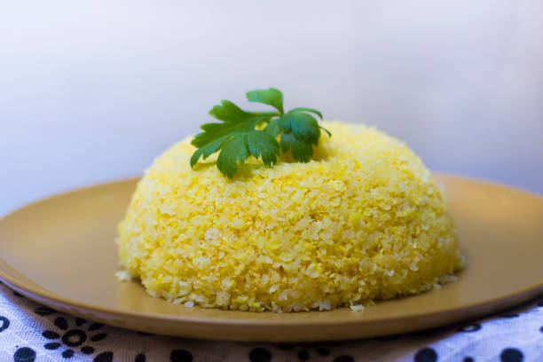

Acarajé: um quitute feito com massa de feijão-fradinho frita em azeite de dendê, recheado com vatapá (uma mistura de pão, camarão seco, amendoim, leite de coco e temperos) e caruru (quiabo refogado).

Baião de dois: um prato de arroz e feijão-de-corda cozidos juntos, geralmente temperado com carne seca, queijo coalho, linguiça, coentro e outros ingredientes regionais.
Cuscuz nordestino: um prato feito com flocos de milho temperados e cozidos no vapor. É geralmente acompanhado de carne de sol, queijo coalho, manteiga de garrafa e outros ingredientes de sua preferência.
Moqueca de peixe: um prato de origem indígena, consiste em peixe cozido em um molho à base de leite de coco, dendê, pimentões, tomates, cebola, coentro e outros temperos.
Buchada de bode: uma iguaria feita com as vísceras do bode, cozidas e temperadas com ervas, pimenta e especiarias. É tradicionalmente servida com arroz, feijão-de-corda e farinha de mandioca.